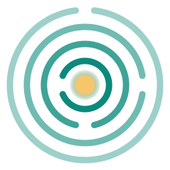
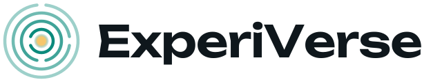

The mark
Four rings, each with its door, and a light at the center.
The ExperiVerse™ symbol is the one mark every site in the ecosystem shares. Four rings, one for each sphere of a life, each with its own door. The doors turn as you go inward, the way a labyrinth or a vault dial does: you open them one at a time. The light at the center is you.

Four spheres, one light
Every life has a public side, a personal side, a private side and things kept for no one else. ExperiVerse gives each its own sphere, nested around you, and the symbol draws them.
- At the center you. The light the spheres are built around.
- Vault eyes only. What nothing should ever be able to ask for.
- Keep private, by consent. Your records and credentials, shared only when you say yes.
- Give and Speak personal and community. Giving and receiving, your votes, your merit, your credentials.
- Express public. You in the digital world, personal or business.
The doors
Each ring has one opening, and no two openings line up. The outermost, Express, opens at the top; Give and Speak at the right; Keep at the bottom; the Vault at the left, beside the light. To reach the center you pass each door in turn, the way a vault opens, one dial at a time.
Doors open outward only when you open them. Sharing is the door; nothing moves to a wider sphere by itself.
Whatever comes in is checked first. A record counts as verified only when its issuer signed it or it came straight from the issuer.
The light
The warm core is you, the light the spheres are built around. The rings are brightest beside it and fade as they widen: what is nearest to you is held most closely.
The rings
Four strokes of one weight, drawn as open circles. Nothing crosses the center, so the mark never turns into a target.
The variants
Dark first, the sea glass of the wallet, with a light version for light pages and a black edition for the most private data. Every file is plain SVG and needs no fonts to open.
The symbol





The lockup
The symbol beside the name; the name's capital letters stand 40% as tall as the symbol.





The wordmark
ExperiVerse in Unbounded 600, outlined so it looks the same everywhere: one word, a capital E and a capital V.


Across the ecosystem
The mark is the same on every site. Each site keeps its own accent around it, for eyebrows, links and chips, and never inside the rings.
| Site | How it uses the mark | Accent |
|---|---|---|
| tsiyongrid.comThe Tsiyon Grid | Its own civic name first, with the light symbol and a small "built on ExperiVerse" beside it, so agencies, care teams and donors meet the program first and the technology second. The sign-in for every site lives here. | rose #CF4060 |
| purehuman.ioPure Human | The glass symbol in the header and the hero; the sea-glass accent is the symbol's own color, kept for the standard at the heart of it. | sea glass #72E4D3 |
| humanproof.meHumanProof | The glass symbol in the header; a sage-green accent for checking, passes and the human gate. | sage green #9AD7A8 |
| experiverse.siExperiVerse SI (this site) | The glass symbol in the header and the hero; a violet accent for people and agents thinking together. | violet #B3A6FF |
| consensusreality.orgConsensus Reality | The glass symbol in the header and the hero; an amber accent for notes, votes and the reports. | amber #F2B45A |
How to use the mark
Clear space
Keep the width of the innermost ring free on every side: about a third of the symbol's width. No text, edge or other mark comes inside it.
Smallest size
20 px for the symbol, 120 px wide for the lockup. Below that the doors close up; use the name in words instead.
Which one
Glass on dark, light on light, the black edition only on pure black, and mono where one ink is all there is.
Do
- Use the files on this page as they are.
- Keep the doors open and the light at the center.
- Give the mark a plain field: a quiet color, or the dark of the page.
- Write the name as one word, ExperiVerse, with ™ after the first mention on public pages until the mark is registered.
Don't
- Draw a line or a pointer through the center: it turns into a target.
- Close the doors, or move them.
- Recolor the rings with room hues or a site's accent.
- Rotate, stretch or outline it, or set it on a busy photo.
Light, doors and mirrors
Light against darkness, doors and mirrors are the brand's images, used where they help and never as decoration. Two from Henry's essays on aquariusintuitive.com.


The files
Open format (SVG 1.1), drawn by one script in Henry's record, so the marks and the brand guide stay in step.
- experiverse-lockup-black.svg
- experiverse-lockup-glass.svg
- experiverse-lockup-light.svg
- experiverse-lockup-mono.svg
- experiverse-symbol-black.svg
- experiverse-symbol-glass.svg
- experiverse-symbol-light.svg
- experiverse-symbol-mono.svg
- experiverse-wordmark-dark.svg
- experiverse-wordmark-light.svg
Where the name stands. ExperiVerse was searched in the USPTO's public trademark search on 25 October 2026. A search is a first screen, not clearance: counsel clears the name before it is filed or printed on anything sold. Until it is registered it carries ™, never ®.